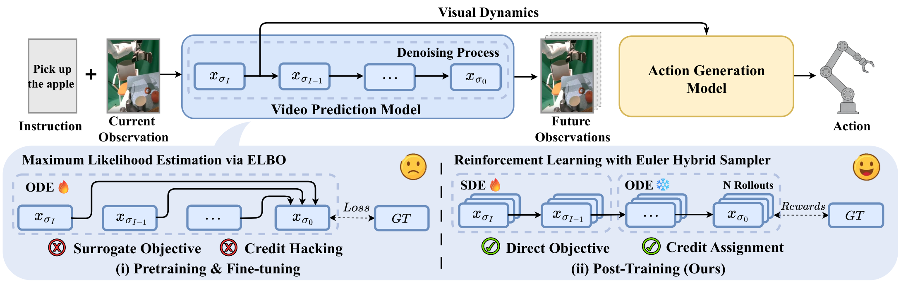
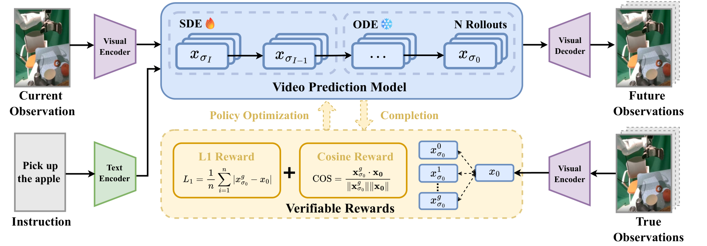
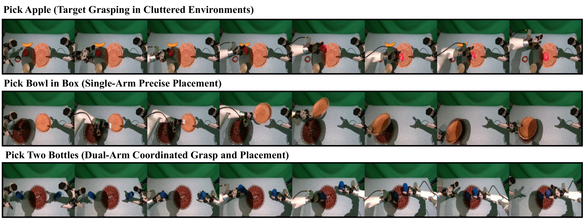
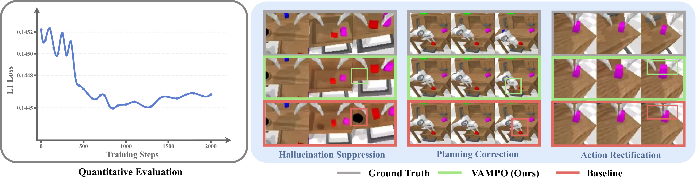
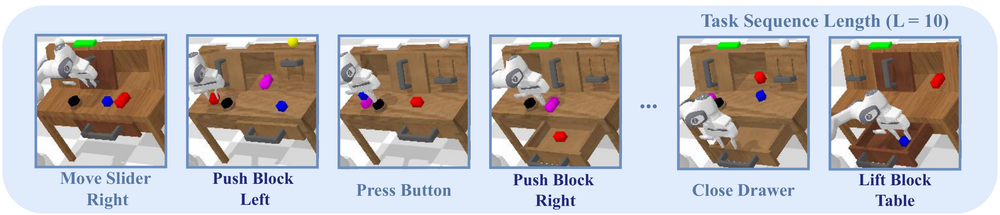
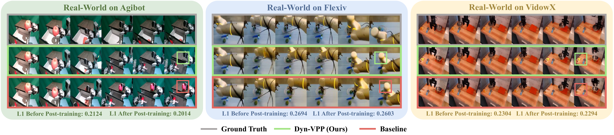
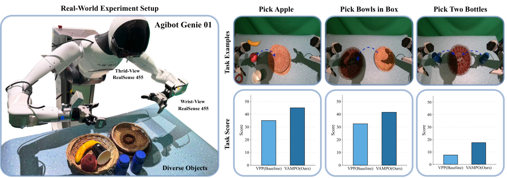
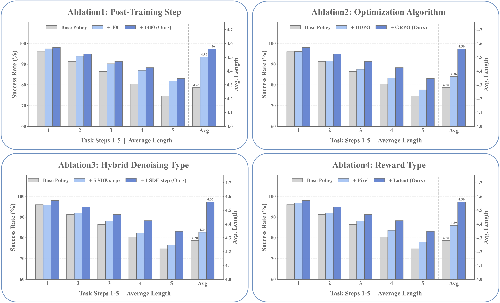

VAMPO: Policy Optimization for Improving Visual Dynamics in Video Action Models
1. 论文速览
难度评级：★★★★☆。需要理解 diffusion video model、EDM/Euler sampler、DDPO/GRPO、latent video-action model、CALVIN 长程评测和机器人 VLA 训练流程。
关键词：Video Action Model, Visual Dynamics, Diffusion Policy Optimization, GRPO, Latent Reward。
| 阅读定位 | 内容 |
|---|---|
| 论文要解决什么 | 现有 video action models 依赖 VPM 预测未来视觉表示来指导动作，但 diffusion VPM 常用 ELBO/likelihood surrogate 训练，只保证全局 plausible，不直接优化物体姿态、空间关系、接触时机等控制关键视觉动力学。 |
| 作者的方法抓手 | 把 VPM denoising 轨迹建模为 MDP；用 Euler Hybrid sampler 只在第一步注入 SDE 随机性，产生可计算概率比的候选轨迹；用 latent-space L1 + cosine reward 和 GRPO 直接优化预测 latent 与 expert future latent 的一致性。 |
| 最重要的结果 | 在 CALVIN ABC$\to$D 上，VAMPO 从 VPP base 的 Avg. Len 4.28 提升到 4.56，5 连任务完成率从 74.7 提升到 83.1；L-CALVIN 10 步任务 Avg. Len 从 VPP 5.53 提升到 6.73；真实 Agibot Genie 01 任务中也优于 base policy。 |
| 阅读时要注意的点 | VAMPO 不是换 VLA 架构，也不是额外加数据；它主要 post-train VPM 的 visual dynamics。实验中“post-training VPM + original AGM”增益有限，而“post-training VPM + post-training AGM”增益更大，说明视觉动力学改善需要被下游动作模型重新吸收。 |
核心贡献清单
- 指出 objective mismatch。论文把 VPM 的 likelihood surrogate 与机器人控制所需的 precision-critical visual dynamics 区分开，指出全局视觉合理性并不等价于下游动作可靠性。
- 提出 VAMPO post-training。VAMPO 将 multi-step denoising 形式化为 sequential decision process，并用 expert visual dynamics 的 latent reward 直接优化 VPM。
- 提出 Euler Hybrid sampler + GRPO。只在第一步 denoising 使用 SDE stochasticity，其余步骤保持 ODE deterministic，以降低策略梯度方差并缓解 reward hacking。
- 验证 visual dynamics 到 action 的传导。论文用 CALVIN、L-CALVIN、真实机器人和 effective-rank/Jacobian 分析说明更好的 visual dynamics 能带来更强 vision-action coupling 与 action execution。

2. 动机
2.1 要解决什么问题
Video Action Model (VAM) 的核心想法是：先由 Video Prediction Model 根据当前观测和语言指令预测未来视觉表示，再由 Action Generation Model 把该表示转成动作序列。这个范式比直接从当前 observation/language 映射到 action 多了一个显式“未来视觉动力学”中间层。
问题在于，VPM 常用 diffusion likelihood surrogate 训练，优化目标偏向数据分布上的全局 plausible generation。机器人 manipulation 对某些局部细节更敏感：物体位姿差一点、夹爪接触早一帧或晚一帧、空间关系有小缝隙，都可能让 AGM 产生不同动作。论文把这称为 generative training 与 action-centric deployment 之间的 objective mismatch。
2.2 已有方法的局限
Pixel-level VPM 可直观输出未来图像或视频，但需要合成纹理、光照等大量控制弱相关信息，计算开销也高。Latent-level VPM 更高效，能够压缩掉一部分 nuisance variability，并从 early denoising features 中获得任务相关 dynamics；因此本文也采用 latent-level paradigm。
不过 latent-level 并没有自动解决训练目标问题。论文在 Preliminary 中明确指出，VPM 输出可能在整体上 coherent，却在 pose、contact timing、fine-grained spatial relations 上存在微小错误；这些错误被 AGM 消费后，在决策边界附近会被放大，导致错误动作和 compounding failures。
2.3 本文的解决思路
VAMPO 的思路是直接优化 VPM 的预测视觉动力学，而不是只靠 likelihood surrogate。具体做法是把 denoising step 看成 policy action，把最终预测 latent 与 expert future latent 的一致性作为 terminal reward，用 policy-gradient-style post-training 改变 VPM 的采样分布。
3. 相关工作梳理
3.1 论文自述的相关工作
| 方向 | 论文如何定位 | 与 VAMPO 的关系 |
|---|---|---|
| Video-Action Models | VAM 通过预测未来 observation 或 latent 来指导 action generation，相比 VLM-based VLA 的直接 observation-language-to-action 映射，显式引入 dynamical prior。 | VAMPO 继承 VAM/VPP 的 latent-level VPM + AGM pipeline，但重点优化 VPM 预测质量。 |
| VLM-based VLAs | RT 系列、OpenVLA 等通常直接从 observation/language 到 action，不显式建模未来视觉演化。 | 论文在 CALVIN 表中把 VAMPO 与 OpenVLA、OpenVLA-OFT、$\pi_0$、$\pi_{0.5}$ 比较。 |
| Diffusion Models for Robot Control | DDPO 将 denoising 视为 sequential decision process；GRPO 等扩展把 RL 的 long-term reward optimization 引入 generative model。 | VAMPO 将相同思想迁移到机器人 VPM 的 latent dynamics optimization，而不是只优化图像 aesthetic 或通用生成质量。 |
3.2 直接前作对比
| 维度 | VPP / latent VAM | DDPO-style diffusion optimization | VAMPO |
|---|---|---|---|
| 目标 | 用 future latent 作为 action policy 条件，提高 VLA 控制。 | 把 diffusion denoising 当作 MDP，用奖励优化生成过程。 | 用 GRPO 后训练 VPM，使 future latent 更接近 expert visual dynamics。 |
| 优化信号 | 主要是 video/action supervised losses。 | 任务奖励或偏好奖励，依任务而定。 | 非对抗、可验证的 latent L1 + cosine reward。 |
| 采样随机性 | VPM 原 pipeline 使用确定性 Euler Discrete solver。 | 通常需要随机 denoising 轨迹来估计 policy gradient。 | 只在第一步用 Euler Ancestral SDE，其余用 deterministic Euler ODE。 |
| 结构改动 | 已有 VPM/AGM 架构。 | 一般需要适配 diffusion policy update。 | 不改 VLA 架构，主要改 VPM post-training objective。 |
4. 方法详解
4.1 方法概览
论文采用 latent-level video action model。数据样本包含当前观测 $o$、语言指令 $l$、专家动作序列 $\mathbf{a}$ 和目标未来视频片段 $N$。VPM 以 $c_v=(o,l)$ 为条件预测未来 latent $\hat{x}_0$ 和中间视觉特征 $\hat{h}$；AGM 再以 $c_a=(\hat{h},l)$ 为条件生成动作 $\hat{a}_0$。
VAMPO 的 post-training 只针对 VPM：先从 noisy latent 开始 rollout 多个 candidate denoising trajectories，第一步用 SDE 产生 stochastic exploration，后续步骤用 deterministic ODE 保持视频轨迹一致性。每个候选最终得到 $x_{\sigma_0}^g$，与 expert latent $x_0=\mathcal{E}(N)$ 计算奖励；GRPO 用组内归一化 advantage 更新 VPM。

4.2 方法演变脉络
Pixel-level VAM → latent-level VAM：早期方法预测未来图像或 goal image，直观但冗余；latent-level 方法使用中间 denoising feature，计算更高效且更贴近动作相关的几何/关系线索。
Latent VAM / VPP → VAMPO：VPP 已有 VPM + AGM pipeline；VAMPO 不改变架构，而是在 VPM post-training 时直接优化 latent future representation 的 dynamics accuracy。
DDPO/GRPO → VAMPO：DDPO 把 diffusion denoising 写成 MDP；VAMPO 使用这个视角，但为机器人 VPM 设计了只在第一步随机的 Euler Hybrid sampler，并用 expert latent dynamics 定义奖励。
4.3 核心设计与数学推导
Latent-level VAM 基础
这个公式描述 VAM 的两段式 pipeline：先预测未来视觉表示，再把预测表示转成动作。
$$(\hat{x}_0,\hat{h})=\mathrm{VPM}_{\theta}(c_v),\qquad \hat{a}_0=\mathrm{AGM}_{\theta}(c_a),\quad c_v=(o,l),\quad c_a=(\hat{h},l)$$| $o$ | 当前 observation，通常来自机器人摄像头或多视角观测。 |
| $l$ | 语言指令。 |
| $\hat{x}_0$ | VPM 预测的未来 latent representation。 |
| $\hat{h}$ | 从 VPM denoiser 隐层提取的 predictive visual feature，用于条件化 AGM。 |
VPM 的 EDM noising 和 supervised objective
训练 VPM 时，先把 expert future video 编码成 latent，再按连续噪声水平加噪，让 denoiser 恢复干净 latent。
$$x_0=\mathcal{E}(N),\qquad x_\sigma=x_0+\sigma\epsilon,\quad \epsilon\sim\mathcal{N}(0,\mathbf{I})$$ $$\mathcal{L}_{Video}=\mathbb{E}_{x_0,\epsilon,\sigma_i}\left\|D_{\theta_v}(x_{\sigma_i},\sigma_i,c_v)-x_0\right\|^2$$| $N$ | 目标未来视频片段，即 expert future sequence。 |
| $\mathcal{E}$ | 预训练 VAE encoder。 |
| $D_{\theta_v}$ | VPM denoiser，输入 noisy latent、noise level 和条件 $c_v$。 |
这一步对应原始 VPM 的 likelihood-surrogate 训练。VAMPO 不是删除它，而是在其基础上进行 reward-based post-training。
确定性 Euler Discrete solver
推理时从大噪声逐步走到零噪声；原始 solver 是确定性的，因此不提供 policy gradient 所需的随机 transition density。
$$x_{\sigma_{i-1}}=x_{\sigma_i}+(\sigma_{i-1}-\sigma_i)\frac{x_{\sigma_i}-D_{\theta_v}(x_{\sigma_i},\sigma_i,c_v)}{\sigma_i}$$| $\sigma_I>\cdots>\sigma_0=0$ | 递减 noise schedule。 |
| $x_{\sigma_i}$ | 第 $i$ 个噪声水平下的 latent state。 |
Denoising MDP formulation
把 denoising 过程看作一个 episode：状态是当前 noisy latent 与条件，动作是下一步 latent，最终奖励只在 denoising 结束后给出。
$$\tau=(\mathbf{s}_I,\mathbf{a}_I,\mathbf{s}_{I-1},\mathbf{a}_{I-1},\ldots,\mathbf{s}_0,\mathbf{a}_0)$$ $$\mathbf{s}_i=(x_{\sigma_i},\sigma_i,c_v),\qquad \mathbf{a}_i=x_{\sigma_{i-1}},\qquad \mathbf{R}(\mathbf{s}_i,\mathbf{a}_i)=\mathbbm{1}_{[i=0]}r(x_{\sigma_0})$$ $$\mathcal{J}(\boldsymbol{\pi})=\mathbb{E}_{\tau\sim\boldsymbol{\pi}}\left[\sum_{i=0}^{I}\mathbf{R}(\mathbf{s}_i,\mathbf{a}_i)\right]$$| $\boldsymbol{\rho}_0$ | 初始状态分布，由 condition distribution、起始 timestep $I$ 和 Gaussian white noise 决定。 |
| $\boldsymbol{P}$ | 动作执行后的状态转移；确定下一 latent、下一 noise level 和同一条件。 |
| $r(x_{\sigma_0})$ | terminal reward，评估最终预测 latent 的质量。 |
Euler Ancestral transition 与 Hybrid sampler
为了有可计算的 log probability，VAMPO 把第一步 denoising 改成 Gaussian SDE transition。
$$x_{\sigma_{i-1}}=x_{\sigma_{i-1}}^{\mathrm{det}}+\sigma_{\mathrm{up}}\epsilon,\quad \epsilon\sim\mathcal{N}(0,\mathbf{I})$$ $$x_{\sigma_{i-1}}^{\mathrm{det}}=x_{\sigma_i}+(\sigma_{\mathrm{down}}-\sigma_i)\frac{x_{\sigma_i}-D_{\theta_v}(x_{\sigma_i},\sigma_i,c_v)}{\sigma_i}$$ $$p_\theta(x_{\sigma_{i-1}}\mid x_{\sigma_i},c_v)=\mathcal{N}\left(x_{\sigma_{i-1}};x_{\sigma_{i-1}}^{\mathrm{det}},\sigma_{\mathrm{up}}^2\mathbf{I}\right)$$| $\sigma_{\mathrm{up}}$ | stochastic noise scale。 |
| $\sigma_{\mathrm{down}}$ | deterministic update 使用的有效 noise level。 |
| $p_\theta$ | GRPO/PPO ratio 所需的 transition density。 |
Hybrid sampler 的关键约束：只在第一步有随机性，其余 denoising step 退回 deterministic Euler ODE。
$$p(\mathbf{s}_{0:I-1},\mathbf{a}_{1:I}\mid\mathbf{s}_I)=\boldsymbol{\pi}^{eas}(\mathbf{a}_I\mid\mathbf{s}_I)\prod_{i=1}^{I-1}\delta\left(\mathbf{a}_i-f_{\mathrm{eds}}(\mathbf{s}_i)\right)$$论文给出的原因是：如果所有 denoising step 都加 SDE，terminal reward 会被后续与 action modeling 无关的 denoising actions 利用，产生 credit assignment 问题和 reward hacking；而 AGM 使用的是早期 denoising feature，因此把随机性集中在第一步更贴近 action-relevant representation。
Reward 与 GRPO objective
奖励直接比较预测 future latent 和 expert future latent：L1 约束绝对误差，cosine 约束方向一致性。
$$r=-\lambda_{L1}\|x_{\sigma_0}-x_0\|_1+\lambda_{\mathrm{cos}}\frac{x_{\sigma_0}\cdot x_0}{\|x_{\sigma_0}\|\|x_0\|}$$ $$A_g=\frac{r_g-\mathrm{mean}(\{r_1,\ldots,r_G\})}{\mathrm{std}(\{r_1,\ldots,r_G\})}$$| $G$ | 同一条件下 rollout 的 candidate 数；附录设置为 8。 |
| $x_0$ | expert future clip 经 VAE encoder 得到的 ground-truth latent。 |
| $A_g$ | 组内标准化 advantage；GRPO 不需要单独 value model。 |
GRPO 使用 clipped probability ratio，让新 VPM 不要一次偏离旧 VPM 太远。
$$J(\theta)=\mathbb{E}_{\mathbf{a}_{I,g}\sim\boldsymbol{\pi}_{\theta_{\mathrm{old}}}}\left[\frac{1}{G}\sum_{g=1}^{G}\min\left(\rho_{I,g}A_g,\mathrm{clip}(\rho_{I,g},1-\epsilon_c,1+\epsilon_c)A_g\right)\right]$$ $$\rho_{I,g}=\frac{\boldsymbol{\pi}_\theta(\mathbf{a}_{I,g}\mid\mathbf{s}_{I,g})}{\boldsymbol{\pi}_{\theta_{\mathrm{old}}}(\mathbf{a}_{I,g}\mid\mathbf{s}_{I,g})}$$训练过程伪代码
Input: old VPM policy pi_old, dataset D, group size G
Initialize pi_theta = pi_old
for iteration t = 1..T:
sample batch of conditions c_v=(o,l) and expert future latents x_0
sample shared initial noise x_sigma_I
for g = 1..G:
rollout hybrid sampler:
first denoising step: Euler Ancestral SDE
remaining steps: Euler Discrete ODE
obtain candidate latent x_sigma_0^g
compute reward r_g from latent L1 and cosine similarity
compute group-normalized advantages A_g
update theta with clipped GRPO objective
periodically set pi_old = pi_theta
4.4 实现要点
| 项目 | 设置 | 来源 |
|---|---|---|
| VPM 初始化 | 使用 VPP released pretrained checkpoint。 | 正文实验 / Appendix Training Details |
| VPM post-training 数据 | CALVIN ABC videos；CALVIN ABC 含 18,033 trajectories；选取子集得到 129,454 video samples。 | 正文实验 |
| VPM post-training | 约 1.5k steps；64 NVIDIA H20 GPUs；distributed data parallel。 | 正文实验 / 附录 |
| AGM training | 在 whole CALVIN dataset 上约 10 epochs；8 NVIDIA H20 GPUs。 | 正文实验 / 附录 |
| Evaluation hardware | NVIDIA RTX 5880 GPUs。 | 正文实验 / 附录 |
| GRPO group size | $G=8$。 | Appendix Table S2 |
| PPO clipping | $\epsilon_{\mathrm{clip}}=0.2$。 | Appendix Table S2 |
| Batch size | 8。 | Appendix Table S2 |
| Learning rate | Fine-tuning $1\times 10^{-4}$；post-training $1\times 10^{-6}$。 | Appendix Table S2 |
| Reward weights | $\lambda_{L1}=1.0$；$\lambda_{\mathrm{cos}}=1.0$。 | Appendix Table S2 |
模型配置
| 模块 | 参数 | 值 |
|---|---|---|
| Prediction | Video length / Action shape | 16 / $10\times 7$ |
| TVP | Language shape / Image shape | $20\times512$ / $256\times256$ |
| Video Former | Token shape / input dim / latent dim / heads / layers | $16\times14\times384$ / 1280 / 512 / 8 / 6 |
| Diffusion Transformer | Latent dim / condition shape / heads / encoder / decoder / sampling steps | 384 / $225\times384$ / 8 / 4 / 4 / 10 |
5. 实验
5.1 实验设置
仿真环境。主要评测为 CALVIN ABC$\to$D：训练在环境 ABC，测试在未见过的 D，测试视觉外观和布局泛化，以及长程语言条件任务执行。论文还使用 L-CALVIN 将序列长度从 5 扩到 10 步，检验更长 horizon。
Baselines。Base policy 是 VPP，因为它是强 VPM-based VLA。比较方法包括 VLM-based VLAs（OpenVLA、OpenVLA-OFT、$\pi_0$、$\pi_{0.5}$）和 VPM-based VLAs（UniPi、SuSIE、CLOVER、GR-1、VidMan、Seer、Seer-Large、VPP、Tri-VLA）。
真实环境。真实系统为 Agibot Genie 01 双臂机器人，双臂共 14 DoF，每个末端 2-DoF gripper。感知由三台 RGB-D 相机提供：头部 Intel RealSense D455 提供第三人称全局视角，两个腕部 Intel RealSense D405 提供近距离接触和抓取几何细节。每个任务收集 200 条高质量 teleoperated demonstrations。

5.2 主要结果
Visual dynamics 与 action execution
论文先验证 Q1/Q2：VAMPO 是否改善视觉动力学，以及这种改善是否进入动作执行。Figure 3 显示 predicted latents 与 ground-truth latents 的 L1 evaluation 随训练改善，并以定性图展示 hallucination suppression、planning correction 和 action rectification。

| CALVIN ABC$\to$D | 1 | 2 | 3 | 4 | 5 | Avg. Len | Avg. ER | Avg. ERR |
|---|---|---|---|---|---|---|---|---|
| Base Policy | 96.0 | 91.3 | 86.4 | 80.4 | 74.7 | 4.28 | 29.28 | 0.0603 |
| post-training VPM + original AGM | 96.3 | 91.4 | 87.0 | 82.9 | 77.2 | 4.35 | - | - |
| post-training VPM + post-training AGM | 98.0 | 94.8 | 91.3 | 88.3 | 83.1 | 4.56 | 43.88 | 0.0814 |
这个表的关键解读是：只换 post-trained VPM、保持 AGM 原样时有增益但有限；当 AGM 也在优化后的 visual dynamics 上训练后，5 连任务完成率从 74.7 提升到 83.1，Avg. Len 从 4.28 到 4.56。Avg. ER/ERR 增大表示 action 对更多独立 visual directions 有响应，论文用它解释 richer vision-action coupling。
CALVIN ABC$\to$D 与 SOTA 对比
| 类别 | 方法 | 1 | 2 | 3 | 4 | 5 | Avg. Len |
|---|---|---|---|---|---|---|---|
| VLM-based | OpenVLA | 91.3 | 77.8 | 62.0 | 52.1 | 43.5 | 3.27 |
| VLM-based | $\pi_{0.5}$ | 92.7 | 84.3 | 76.7 | 68.8 | 61.3 | 3.84 |
| VPM pixel-level | CLOVER | 96.0 | 83.5 | 70.8 | 57.5 | 45.4 | 3.53 |
| VPM latent-level | VPP | 96.0 | 91.3 | 86.4 | 80.4 | 74.7 | 4.28 |
| VPM latent-level | Tri-VLA | 96.8 | 92.4 | 86.8 | 83.2 | 81.8 | 4.37 |
| VPM latent-level | VAMPO | 98.0 | 94.8 | 91.3 | 88.3 | 83.1 | 4.56 |
L-CALVIN 长程结果
| 方法 | 1 | 2 | 3 | 4 | 5 | 6 | 7 | 8 | 9 | 10 | Avg. Len |
|---|---|---|---|---|---|---|---|---|---|---|---|
| OpenVLA | 0.67 | 0.34 | 0.24 | 0.12 | 0.03 | 0.01 | 0.01 | 0.01 | 0.00 | 0.00 | 1.43 |
| $\pi_0$ | 0.84 | 0.64 | 0.51 | 0.43 | 0.34 | 0.25 | 0.21 | 0.17 | 0.11 | 0.11 | 3.61 |
| VPP | 0.94 | 0.82 | 0.75 | 0.63 | 0.53 | 0.49 | 0.43 | 0.35 | 0.31 | 0.28 | 5.53 |
| VAMPO | 0.97 | 0.89 | 0.81 | 0.75 | 0.71 | 0.64 | 0.61 | 0.51 | 0.45 | 0.39 | 6.73 |

真实世界结果
真实世界评测覆盖三个任务：cluttered target grasping (pick_apple)、single-arm precise placement (pick_bowl_in_box)、dual-arm coordinated grasp and placement (pick_two_bottles)。评分规则见附录：前两个任务抓取 50 分、放置 50 分；双臂任务左右抓取和左右放置各 25 分。


5.3 消融实验

| 消融 | 设置 | 5 连完成率 | Avg. Len | 论文结论 |
|---|---|---|---|---|
| Reward type | Pixel reward | 78.0 | 4.39 | pixel consistency 有帮助但不如 latent dynamics。 |
| Reward type | Latent reward (Ours) | 83.1 | 4.56 | latent representation 更贴近 dynamics 与 task semantics。 |
| Hybrid denoising | 5-step SDE | 76.4 | 4.34 | 后续步骤加 SDE 可能诱发 reward hacking。 |
| Hybrid denoising | 1-step SDE (Ours) | 83.1 | 4.56 | 只扰动第一步兼顾可优化性和 temporal coherence。 |
| Optimization | DDPO | 77.6 | 4.36 | 对 noisy rewards 更敏感，利用候选多样性不足。 |
| Optimization | GRPO (Ours) | 83.1 | 4.56 | 组内归一化和 clipping 更稳定。 |
| Post-training steps | 400 / 600 / 1000 / 1400 | 81.8 / 77.2 / 78.2 / 83.1 | 4.50 / 4.31 / 4.42 / 4.56 | RL 训练中途有波动，但各 checkpoint 均高于 base；1400 最好。 |
5.4 补充实验与可视化
附录 Visualization 给出 one-step direct prediction。作者说明模型能够捕捉机器人运动的底层 visual dynamics；虽然纹理和细粒度细节不完美，但轨迹和物理交互一致性支持该模型的有效性。

6. 结果分析与讨论
6.1 论文已给出的结果分析
论文对 Q1 的回答是，VAMPO 后训练后的 latent dynamics 与 ground-truth latent 的 L1 距离整体下降，定性上减少 hallucination、纠正 planning 和动作预测错误。对 Q2，表格显示 VPM 改善能转化为 action execution 增益，尤其当 AGM 也在 post-trained VPM 产生的 visual dynamics 上训练后，增益显著扩大。
对 Q3，论文使用 Jacobian $\mathbf{J}=\partial\mathbf{a}/\partial\mathbf{v}$ 的 effective rank 分析。更高 Avg. ER/ERR 表示 AGM 在生成动作时依赖更多相互独立的视觉方向；VAMPO 从 29.28 / 0.0603 提升到 43.88 / 0.0814，被作者解释为 richer vision-action coupling。
对 Q4，作者强调 VAMPO 虽然建立在 VPP 上，但不需要额外网络组件或额外数据，就能超过 VPP 和 Tri-VLA；在 L-CALVIN 长程 setting 中增益更明显，说明长程 manipulation 对 visual dynamics 的质量更敏感。
对 Q5，作者通过四组消融解释组件作用：GRPO 优于 DDPO，1-step SDE 优于 5-step SDE，latent reward 优于 pixel reward，post-training steps 存在 RL 波动但最终 1400 steps 最好。
6.2 论文明确写出的未来方向
Conclusion 中作者没有列出独立的未来工作清单，但给出一个方向性判断：video-based robot learning 和 VLA 系统可能需要从 likelihood-only training 走向 direct optimization of control-relevant predictive signals。
7. 分析、局限与边界
7.1 这篇论文最有价值的地方
在论文自己的实验和方法框架内，最核心的价值是把“future visual representation 对控制有用”进一步推进为“future visual representation 应该按控制相关奖励直接优化”。VAMPO 没有停留在更大模型或更多数据，而是把 VPM 的 denoising 轨迹变成可做 GRPO 的对象，并用 expert latent dynamics 作为非对抗、可验证奖励。
7.2 结果为什么站得住
证据链比较完整：先用 L1 latent evaluation 和可视化证明 visual dynamics 本身改善；再用 frozen/original AGM 与 post-trained AGM 对照展示这种改善如何传到 action；随后用 ER/ERR 解释 vision-action coupling 变强；最后通过 CALVIN、L-CALVIN、真实 Agibot 任务和四类消融排除“只是 benchmark 表现偶然提升”的解释。
7.3 作者明确承认或实验暴露的局限
- RL post-training 有波动。论文在 post-training steps 消融中明确说训练过程 somewhat unstable，中间会出现 performance drops；这来自 RL 的 stochasticity。
- SDE 位置敏感。作者指出在后续 denoising steps 施加 SDE 会导致 reward hacking，因为后续扰动可能优化 reward 却不真正改善 action-relevant early representation。
- VPM 改善需要 AGM 吸收。只 post-train VPM 但保持 original AGM 时提升较小；更大提升需要 post-training VPM + post-training AGM。
- 纹理细节并非完美。附录 one-step prediction 可视化中作者说明 textures and fine-grained details are not perfectly precise，但轨迹和物理交互一致。
7.4 适用边界
VAMPO 的设定适用于 latent-level VPM-based VLA，尤其是未来视觉表示会被 AGM 用来生成动作的 pipeline。奖励需要 expert future clip 编码出的 latent $x_0$，因此它是基于 demonstration/video data 的 post-training，而不是无需专家未来轨迹的在线 RL。
实验主要覆盖 CALVIN ABC$\to$D、L-CALVIN 和 Agibot Genie 01 的 tabletop tasks。虽然论文也展示 Flexiv dual-arm robot、VidowX 的定性可视化，但主要数值评测集中在 CALVIN 和 Agibot 任务。
8. 复现审计
源码可解析：主文件为 paper.tex，正文分布在 sec/，附录包含训练配置、真实任务细节、消融和可视化。
图表已本地化：源码 PDF 图已使用 PyMuPDF 从 colab_en 环境转换为 PNG，报告引用本地 figures/。
复现链接：论文元信息给出项目页、GitHub code 和 HuggingFace model 链接。
arXiv HTML 不可用：arXiv HTML 页面提示 “No HTML for '2603.19370'”，本报告完全基于 LaTeX source、PDF 和源码图像解析。
高算力依赖：VPM post-training 使用 64 张 NVIDIA H20，AGM training 使用 8 张 H20；评估使用 RTX 5880。完整复现成本较高。
仍需代码确认细节：论文给出主要超参，但实际复现还需要仓库中的数据采样、GRPO rollout、VPM/AGM checkpoint 组织和 CALVIN evaluation 脚本。